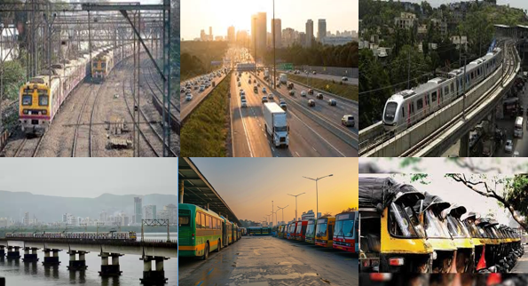

अपने सपनों का घर खरीदें द्वारकाधीश में: जहां कनेक्टिविटी और सुविधा मिलती है।
रेल कनेक्टिविटी
नाइगांव में रेल कनेक्टिविटी एक प्रमुख आकर्षण है, क्योंकि यहाँ नाइगांव रेलवे स्टेशन स्थित है, जो मुंबई की पश्चिमी उपनगर रेलवे लाइन का हिस्सा है। यह स्टेशन वसई रोड-वीरार खंड पर स्थित है, जो मुंबई और उत्तर महाराष्ट्र के बीच एक महत्वपूर्ण रेल मार्ग है। इस स्टेशन से मुंबई के प्रमुख इलाकों जैसे बोरिवली, अंधेरी, और मुंबई सेंट्रल तक आसान और नियमित ट्रेनों की उपलब्धता है, जिससे नाइगांव को शहर से जोड़ने में कोई परेशानी नहीं होती। यह रेल नेटवर्क यात्रियों को कम समय में और किफायती तरीके से यात्रा करने की सुविधा प्रदान करता है, जिससे नाइगांव एक प्रमुख आवासीय और व्यापारिक केंद्र बनता जा रहा है।
सड़क कनेक्टिविटी
नाइगांव की सड़क कनेक्टिविटी भी उत्कृष्ट है, खासकर राष्ट्रीय राजमार्ग 48 (NH-48) के निकटता के कारण, जो दिल्ली से लेकर मुंबई तक फैला हुआ है। यह प्रमुख हाइवे नाइगांव को सीधे मुंबई और आसपास के क्षेत्रों से जोड़ता है, जिससे यात्रा करना बेहद सुविधाजनक हो जाता है। इसके अलावा, नाइगांव कई राज्य राजमार्गों और स्थानीय सड़कों से भी जुड़ा हुआ है, जो इसे आसपास के प्रमुख शहरों और कस्बों से जोड़ते हैं। इन सड़क नेटवर्कों के माध्यम से नाइगांव में यातायात का प्रवाह निर्बाध और सहज रहता है, जो न केवल स्थानीय निवासियों के लिए बल्कि व्यापारिक गतिविधियों के लिए भी महत्वपूर्ण है। सड़क मार्ग की ये कनेक्टिविटी नाइगांव को एक महत्वपूर्ण परिवहन केंद्र बनाती है और इसके विकास की संभावनाओं को और बढ़ाती है।
मुंबई मेट्रोपॉलिटन क्षेत्र (MMR) के निकटता
नाइगांव मुंबई मेट्रोपॉलिटन क्षेत्र (MMR) का हिस्सा होने के कारण, यह मुंबई और उसके उपनगरों से सीधे जुड़ा हुआ है। MMR के तहत विकसित हो रहे इन्फ्रास्ट्रक्चर, जैसे नए एक्सप्रेसवे, फ्लाईओवर, और बेहतर सड़क नेटवर्क, नाइगांव तक पहुंच को और आसान बना रहे हैं। नाइगांव की यह रणनीतिक स्थिति इसे मुंबई के प्रमुख व्यावसायिक, आवासीय और शैक्षिक केंद्रों के करीब रखती है। न केवल मुंबई शहर तक पहुंच सरल है, बल्कि अन्य उपनगरों और प्रमुख इलाकों तक भी यात्रा सुगम होती है। MMR में लगातार हो रहे विकास के कारण नाइगांव में संपत्ति और व्यापारिक विकास के नए अवसर भी सामने आ रहे हैं, जिससे यह क्षेत्र आने वाले समय में और अधिक आकर्षक बनता जा रहा है।
मुंबई उपनगर रेलवे नेटवर्क (पश्चिमी लाइन)
नाइगांव मुंबई उपनगर रेलवे नेटवर्क की पश्चिमी लाइन पर स्थित होने के कारण, यह मुंबई और उसके आसपास के क्षेत्रों से अच्छी तरह जुड़ा हुआ है। पश्चिमी रेलवे का यह खंड मुंबई के प्रमुख उपनगरों को जोड़ने वाला एक अहम मार्ग है, जो नाइगांव के निवासियों के लिए यात्रा को सरल और सुविधाजनक बनाता है। नाइगांव स्टेशन से आप आसानी से बोरिवली, अंधेरी, दादर, और मुंबई सेंट्रल जैसे प्रमुख इलाकों तक पहुंच सकते हैं। पश्चिमी लाइन पर चलने वाली ट्रेनों की नियमितता और गति नाइगांव को मुंबई शहर के साथ एक सशक्त कनेक्शन प्रदान करती है, जो न केवल कामकाजी पेशेवरों के लिए बल्कि छात्रों और अन्य यात्रियों के लिए भी बेहद उपयोगी है। इस कनेक्टिविटी के चलते नाइगांव एक महत्वपूर्ण आवासीय और व्यापारिक केंद्र बनता जा रहा है।
आगामी विकास
नाइगांव में आगामी विकास के कई महत्वपूर्ण योजनाएँ हैं, जो इस क्षेत्र की कनेक्टिविटी और समग्र बुनियादी ढांचे को और सुदृढ़ करने में मदद करेंगी। सबसे महत्वपूर्ण विकासों में से एक है मुंबई मेट्रो नेटवर्क का विस्तार, जिसमें नाइगांव को नई मेट्रो लाइनों से जोड़ा जाएगा। इस विस्तार से नाइगांव तक पहुंच और तेज हो जाएगी, जिससे यात्रा का समय कम होगा और यातायात की भीड़-भाड़ घटेगी। इसके अलावा, नए फ्लाईओवर, सड़क विस्तार परियोजनाएँ, और प्राकृतिक गैस पाइपलाइन नेटवर्क जैसी योजनाएं भी नाइगांव की कनेक्टिविटी को और बेहतर बनाएंगी। इसके साथ ही, नाइगांव के आसपास के क्षेत्र में रिहाइशी और वाणिज्यिक परियोजनाएँ बढ़ने से स्थानीय अर्थव्यवस्था में भी सुधार होगा। ये विकास नाइगांव को आने वाले वर्षों में और अधिक आकर्षक, सुलभ और व्यावसायिक रूप से प्रतिस्पर्धी बना देंगे।
सार्वजनिक परिवहन
नाइगांव में सार्वजनिक परिवहन की सुविधाएं लगातार बढ़ रही हैं, जिससे यहाँ के निवासियों और यात्रियों को यात्रा में आसानी हो रही है। नाइगांव में बस सेवाएं एक महत्वपूर्ण भूमिका निभाती हैं, जिनके जरिए नाइगांव को मुंबई और आसपास के क्षेत्रों से जोड़ा जाता है। महाराष्ट्र राज्य सड़क परिवहन निगम (MSRTC) और विभिन्न निजी ऑपरेटरों द्वारा चलाए जा रहे बसों के मार्ग नाइगांव को प्रमुख शहरों और उपनगरों से जोड़ते हैं, जिससे लंबी दूरी की यात्रा आसान हो जाती है। इसके अलावा, नाइगांव में ऑटो-रिक्शा की भी व्यापक उपलब्धता है, जो स्थानीय यात्रा को और अधिक सुविधाजनक बनाती है। भविष्य में, नाइगांव में नई बस डिपो और बेहतर शहरी परिवहन परियोजनाएं शुरू होने की संभावना है, जो इस क्षेत्र में सार्वजनिक परिवहन को और अधिक व्यवस्थित और सुलभ बनाएंगी। इन सुविधाओं के साथ, नाइगांव का सार्वजनिक परिवहन नेटवर्क इसे एक प्रभावी और सुविधाजनक आवागमन केंद्र बना रहा है।
निष्कर्ष
नाइगांव प्रमुख परिवहन मार्गों से अच्छी तरह जुड़ा हुआ है, जिसमें एक व्यापक रेल नेटवर्क, प्रमुख राजमार्गों के पास स्थितता, और सार्वजनिक परिवहन के क्षेत्र में चल रहे विकास शामिल हैं। ये सभी कारक नाइगांव को एक सुगम और रणनीतिक रूप से स्थित क्षेत्र बनाते हैं, जो मुंबई मेट्रोपॉलिटन क्षेत्र के भीतर आसानी से पहुंचने योग्य है। यह न केवल निवासियों और व्यवसायों के लिए सुविधाजनक है, बल्कि विकास की संभावनाओं के लिहाज से भी एक प्रेरणादायक केंद्र है। नाइगांव के पास मौजूद बेहतर कनेक्टिविटी और बढ़ते हुए बुनियादी ढांचे की वजह से इस क्षेत्र में आगे विकास के बड़े अवसर मौजूद हैं।
Contact us
+91 72088 43484 / +91 72088 43487
kkcreateandbiuld@gmail.com
Radha Nilaya, Plot No. 164/2,
Bapane Village, Chandrapada Road,
Naigaon (E) - 401208,
Maharashtra, India.